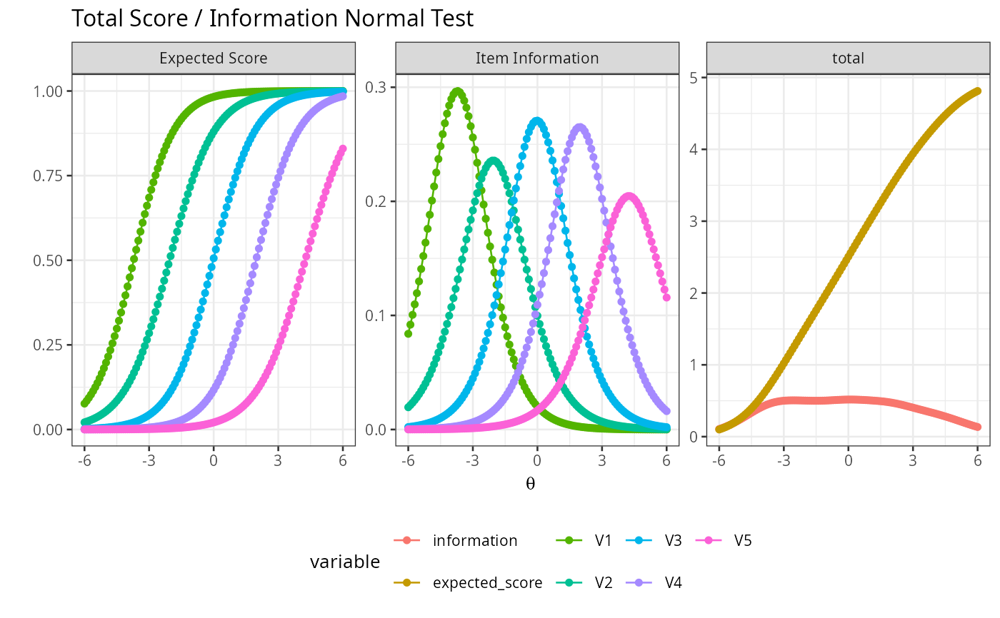
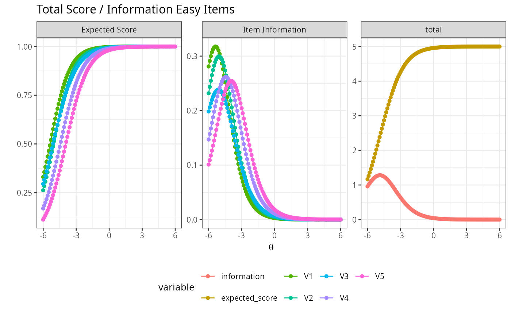
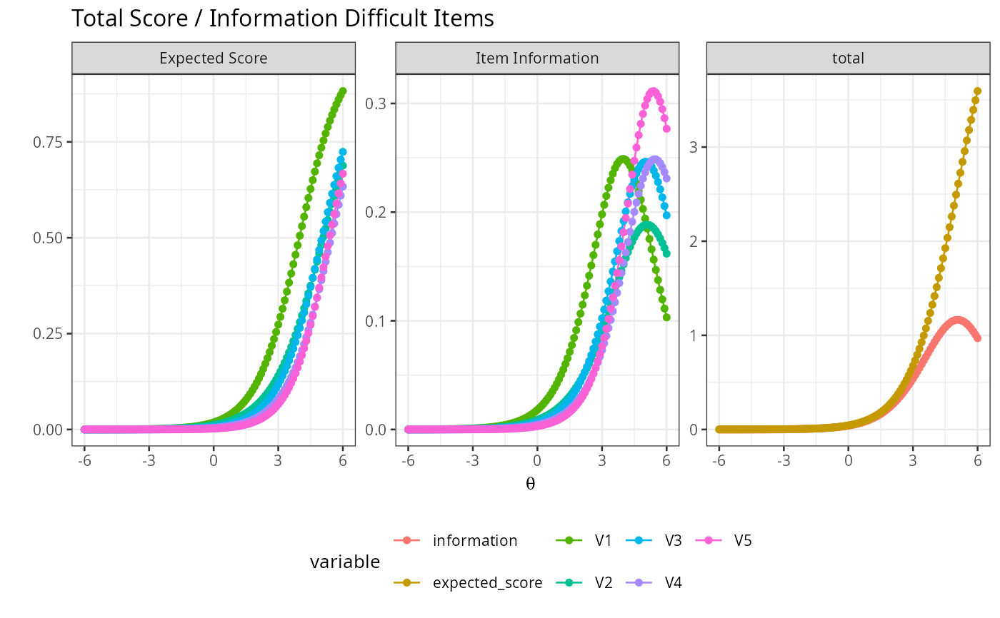
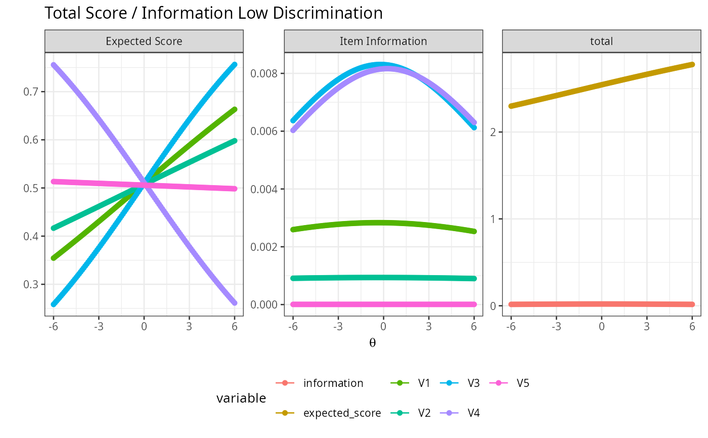
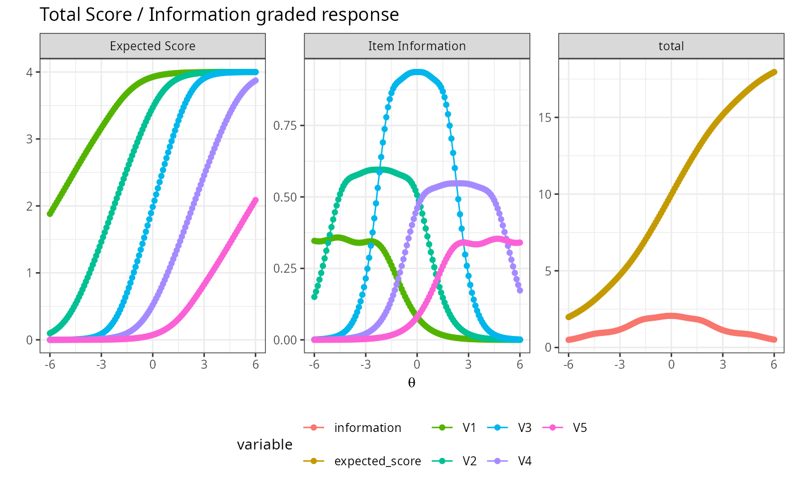

plot_irt_onefactor.RdReturn data for irt plots
plot_irt_onefactor(model, theta = seq(-6, 6, 0.1), title = "", base_size = 10)cormatrix<-psych::sim.rasch(nvar=5,n=50000,low=-4,high=4,d=NULL,a=1,mu=0,sd=1)$items
model<-mirt::mirt(cormatrix,1,empiricalhist=TRUE,calcNull=TRUE)
plot_irt_onefactor(model=model,base_size=10,title="Normal Test")

cormatrix<-psych::sim.rasch(nvar=5,n=50000,low=-6,high=-4,d=NULL,a=1,mu=0,sd=1)$items
model<-mirt::mirt(cormatrix,1,empiricalhist=TRUE,calcNull=TRUE)
plot_irt_onefactor(model=model,base_size=10,title="Easy Items")

cormatrix<-psych::sim.rasch(nvar=5,n=50000,low=4,high=6,d=NULL,a=1,mu=0,sd=1)$items
model<-mirt::mirt(cormatrix,1,empiricalhist=TRUE,calcNull=TRUE)
plot_irt_onefactor(model=model,base_size=10,title="Difficult Items")

cormatrix<-psych::sim.rasch(nvar=5,n=50000,low=-4,high=-4,d=NULL,a=0.01,mu=0,sd=1)$items
model<-mirt::mirt(cormatrix,1,empiricalhist=TRUE,calcNull=TRUE)
plot_irt_onefactor(model=model,base_size=10,title="Low Discrimination")

cormatrix<-psych::sim.poly(nvar=5,n=50000,low=-4,high=4,a=1,c=0,z=1,d=NULL,
mu=0,sd=1,cat=5,mod="logistic",theta=NULL)$items
model<-mirt::mirt(cormatrix,1,itemtype="graded")
plot_irt_onefactor(model=model,base_size=10,title="graded response")
